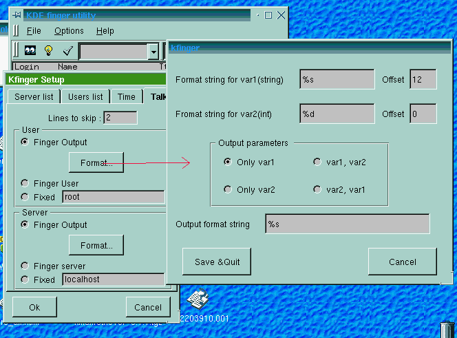
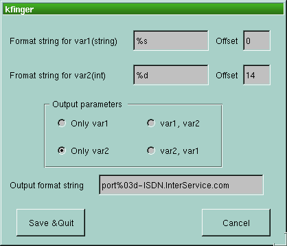

In kfinger Setup tab dialog you find:
User & Server
Time
Talk
To add an item to the server list (or user list) you only have to write the
name you want to add in the line editor, and than to press "Add". If you
want to insert an item in a particular position you must select the position
in the list pressing the Mouse left button on the desired position.
To remove an item select it with the Left Button of your mouse, than press "Remove"
Here you have the check box that (de)activate the auto finger (i.e. Kfinger execute
the finger every nnn seconds).
Using the "slider" you can select the wait time between the finger sessions.
The talk launcher permit you to see who is logged on a server and than to talk with him
only clicking on Talk Launcher button & selecting the desired user.
Kfinger execute "Ktalk userVar@ServerVar"
To get the two Var Ktalk use 3 methods:
-Scanf from finger output(FINGER OUTPUT)
-Using the same value in ToolBar ComboBox(FINGER SERVER or USER)
-Using a fixed value(FIXED)

Finger output
To select how Kfinger have to get from finger output the values you must press "Format.."
Kfinger could read 2 Vars, with C function scanf, from finger output; the two vars
are an integer(var2) and a string(var1). You must specify a format string for scanf
and an offset for the read string (how many characters must be ignored before start
to read).
Than you have to create a format string for the output.
EXAMPLE:
I have the following output with kfinger and I want to obtain a talkLauncher list where
the username is "root" and the server is "portNNN-ISDN.InterService.com" :
Name tty idle
Jack01 1 10
Mary 3 0
robert 4 0
You can set:
Lines to skip: 1
User: Fixed to "root"
Server: Finger output with the following settings:
